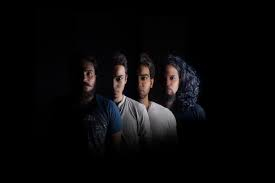

The Local Train is an Indian rock band formed in Chandigarh in 2008, and based in New Delhi since 2015. The band's lineup  comprises lead vocalist, lyricist and guitarist Raman Negi, lead electric guitarist Paras Thakur, bassist Ramit Mehra, and drummer and percussionist Sahil Sarin. Having started their career by releasing a stream of singles, the band's debut album Aalas Ka Pedh was released in 2015 and their second album Vaaqif followed in 2018. Both the albums have been among the top 5 most-streamed rock music albums on Apple Music India. The band is known for its Hindi and Urdu lyrics, often touching on topics like communalism and faith[5] which has made them popular with younger audiences across India. The Local Train released Khudi in 2017, a single from their second album. Its music video starred Arjun Mathur, was directed by Vijesh Rajan and produced by Jungle Book Entertainment.[24] It won Platinum Film of The Year at the 2017 India Film Project Awards.[25] The second album Vaaqif was released in January 2018, with mixing and mastering done by Erich Talaba.[26] The band toured extensively in 21 cities before the album launch. In 2018, they released Mizaaj's music video, their first foray into animation that was conceptualised and animated by Ekabhuya Animation.[27] The cyber-punk animated video for Gustaakh soon followed, produced by Plexus studios [28] and edited by Shreyas Beltangdy. It was selected for the 18th Miami International Science Fiction Film Festival,[29] and chosen as one of Rolling Stone’s 11 best Indian music videos for 2019.
The Local Train frequently performs at live events and music festivals in India, including Bacardi NH7 Weekender, SULAFEST, One Plus Music Fest, Red Bull Tour Bus and Grub Fest. Their music has been featured in Pan Nalin's 2015 film Angry Indian Goddesses, which premiered at the Toronto International Film Festival.